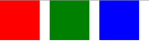

Use Case - Positioners and Layouts In QML
There are several ways to position items in QML.
Below is a brief overview. For more details, see Important Concepts In Qt Quick - Positioning.
Manual Positioning
Items can be placed at specific x,y coordinates on the screen by setting their x,y properties. This will setup their position relative to the top left corner of their parent, according to the visual coordinate system rules.
Combined with using bindings instead of constant valudes for these properties, relative positioning is also easily accomplished by setting the x and y coordinates to the appropriate bindings.
import QtQuick 2.3 Item { width: 100; height: 100 Rectangle { // Manually positioned at 20,20 x: 20 y: 20 width: 80 height: 80 color: "red" } }
Anchors
The Item type provides the abilitiy to anchor to other Item types. There are six anchor lines for each item: left, right, vertical center, top, bottom and horizontal center. The three vertical anchor lines can be anchored to any of the three vertical anchor lines of another item, and the three horizontal anchor lines can be anchored to the horizontal anchor lines of another item.
For full details, see Positioning with Anchors and the documentation of the anchors property.
import QtQuick 2.3 Item { width: 200; height: 200 Rectangle { // Anchored to 20px off the top right corner of the parent anchors.right: parent.right anchors.top: parent.top anchors.margins: 20 // Sets all margins at once width: 80 height: 80 color: "orange" } Rectangle { // Anchored to 20px off the top center corner of the parent. // Notice the different group property syntax for 'anchors' compared to // the previous Rectangle. Both are valid. anchors { horizontalCenter: parent.horizontalCenter; top: parent.top; topMargin: 20 } width: 80 height: 80 color: "green" } }

Positioners and Layouts
For the common case of wanting to position a set of types in a regular pattern, Qt Quick provides some positioner types. Items placed in a positioner are automatically positioned in some way; for example, a Row positions items to be horizontally adjacent (forming a row).
For full details see Item Positioners and the documentation for the positioner types.
import QtQuick 2.3 Item { width: 300; height: 100 Row { // The "Row" type lays out its child items in a horizontal line spacing: 20 // Places 20px of space between items Rectangle { width: 80; height: 80; color: "red" } Rectangle { width: 80; height: 80; color: "green" } Rectangle { width: 80; height: 80; color: "blue" } } }

If positioning and resizing is desired, you can use the layouts in Qt Quick Layouts.